Una iniciativa de la Gobernación de Bolívar · Secretaría de las TIC
La red estudiantil de Bolívar sufre una intrusión del sindicato «Sombra Phish». Como Guardián Digital, los drones atacarán en vuelo continuo: destruye las amenazas con tu bláster antes de que embistan tu visor y drenen tu Barra de Vida, atrapa los mensajes seguros con tu guante izquierdo, y en la Fase 2 defiende a tu compañero Mateo (11°B) levantando el Escudo Solidario.
Mecánica de Combate: ¡Las amenazas inician embestida hacia tu visor! Dispara a tiempo (gatillo der. / clic izq.) para detonarlas en el aire · Atrapa mensajes seguros (mano izq. / clic der. o C).
Preparando modo sin conexión…